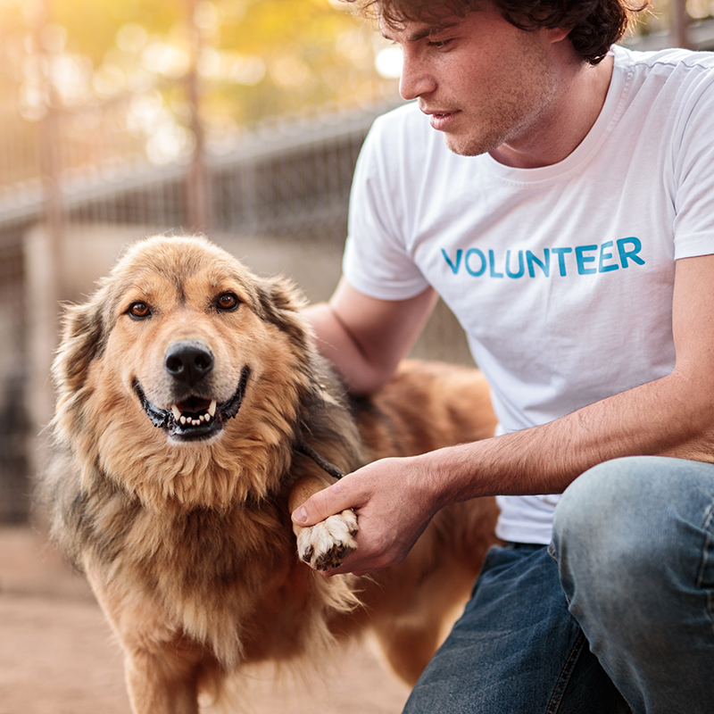

Adoption Process
Twin Cities Animal Rescue helps connect rescue animals with people who are ready to provide safe and loving homes. Potential adopters can learn about available animals and begin the process of finding a pet that is a good match for their home.
Foster Program
Foster families provide temporary homes for rescue animals while they wait for permanent adoption. Fostering gives animals a safe environment and helps them prepare for their future homes.
Volunteer Opportunities

Volunteers help support the rescue organization and the animals in its care. Volunteer opportunities may include helping with animals, supporting events, and assisting with community outreach.